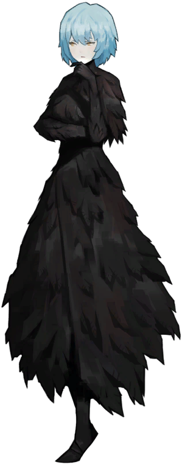

Library of Ruina
Акт 2: Library of Ruina
Наступна гра яку випустила компанія Project Moon була Library of Ruina в якій історія розказує про пост L corp події після справжньої кінцівкі гри де стовп світла бив в небо викидуючи світло в місто.
Несподіваний Гість
Починається історія з того що в бібліотеку попадає невідома нам людина, згадуючи таку особу як пурпурна сльоза. Одразу поряд з гостем з'являється відома з 1 частини нам Анджела в новому обліку, вона вдягнена в довге плаття яке окутує все її тіло, а саме плаття зроблено з пір'я. Після пари відрубаних кінцівок і перпалки словами наш невідомий розкриває своє ім'я і його наймають працювати в бібліотеку (за бесплатно, не вбили ну і на тому дякую.)
Поверхи
Кєтре - поверх загальних робіт на якому пряцює Роланд, гість біблотеки якого найняла Анджела.

